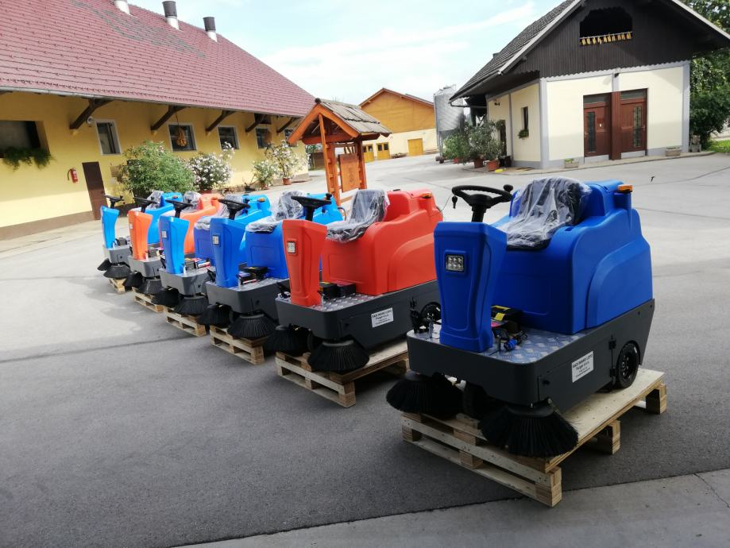

Über uns

Wir haben das Unternehmen unter anderem auch aus der Überzeugung heraus gegründet, dass es auf dem lokalen Markt keinen Anbieter von qualitativ hochwertigen und preislich konkurrenzfähigen Kehrmaschinen gibt. Wir sind hauptsächlich in der Landwirtschaft tätig, zu der auch ein großer Hof gehört.
Wir haben unsere erste Kehrmaschine für den Eigengebrauch vor mehr als zehn Jahren gekauft, damals noch mit Benzinantrieb. Obwohl die Maschine teuer war und von einem bekannten Händler für Kommunalmaschinen verkauft wurde, haben wir keine guten Erfahrungen mit ihr gemacht.
Da unser Hof sehr groß ist und wir ihn auf Dauer nicht “von Hand” reinigen konnten, haben wir uns nach einem alternativen Produkt umgesehen, das wir zunächst ausschließlich für den Eigenbedarf importiert haben.
„Wir waren so zufrieden mit der Kehrmaschine, dass wir sie auch anderen anbieten wollten."
Da auch einige Bekannte von uns Interesse an einer solchen Maschine hatten, haben wir uns entschlossen elektrische Kehrmaschinen auf dem Markt anzubieten. Wir können auf viele zufriedene Kunden in ganz Slowenien und Österreich verweisen.
Überzeugt? Sprechen Sie uns an.
Wir sind keine großen Händler — Sie erreichen immer jemanden, der die Maschine kennt.